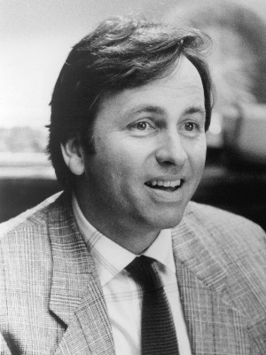
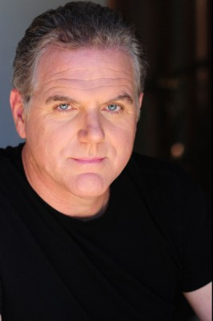

#8840 Wahre Männer
Alternativ: Real Men


 IMDB-Wertung: 6.2 / 10
IMDB-Wertung: 6.2 / 10  Metascore: 0
Metascore: 0 
Jim Belushi plays a super-competent secret agent on the trail of Russian thugs. John Ritter plays a milquetoast dad who gets mixed up in the caper. The story follows their adventures over the course of a week, in which Ritter develops some guts and Belushi gets in touch with his sensitive side.
Jahr: 1987
Dauer: 85 Minuten
FSK: 16
Land: USA Studio: United ArtistsTonspuren: DD2.0 - ,
Untertitel:
Auflösung: 1080p (1920x1040) Größe: 6717 MB
Genre: Action, Sci-Fi, Komödie
Regisseur: Dennis Feldman
Drehbuch: Dennis Feldman
Soundtrack: Miles Goodman
Darsteller:
 Jim Belushi als
Jim Belushi als -  John Ritter als
- Barbara Barrie als
- Mark Herrier als
- Matthew Brooks als
- Dyanne Thorne als
- Suzee Slater als
 James Le Gros als
James Le Gros als - Richard Brestoff als
- Bruce M. Fischer als
 Brian Libby als
Brian Libby als - Richard Partlow als
- Hardy Rawls als
-  Todd Jeffries als
- Peter Looney als
- Isabella Hofmann als
 Buck Kartalian als
Buck Kartalian als - Barbara Bingham als
 Allan Graf als
Allan Graf als  Henry Kingi als
Henry Kingi als - Bill Morey als
- Isa Jank als
- Gail Barle als
- Mariah Dobson als
- Stephen Corvin als
- Charles Walker als
- Don Dolan als
- Mary E. Thompson als
- Travis McKenna als
- Drew Blake Gordon als
- Hugh Gordon als
- Billy Long als
- Lawrence Lott als
- Joe Oradesky als
- Kevin Finney als
- Barry Doe als
- Stan Kamber als
- Joy Lazo als
- Ed Corbett als
Datei: X:\1987\Wahre Männer (1987, FSK16, 1920x1040).mkv seit 02.05.2018
Festplatte: HD 1987-1991
 Es gibt insgesamt 50 Filme in der Gruppe '1987'
Es gibt insgesamt 50 Filme in der Gruppe '1987'